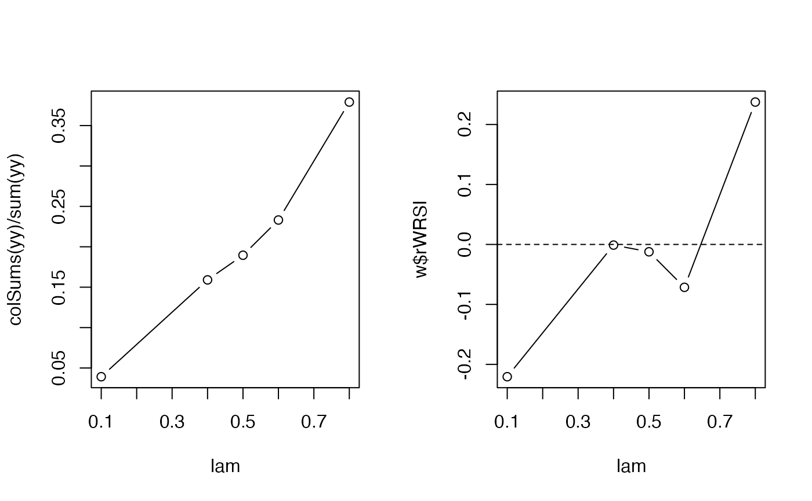
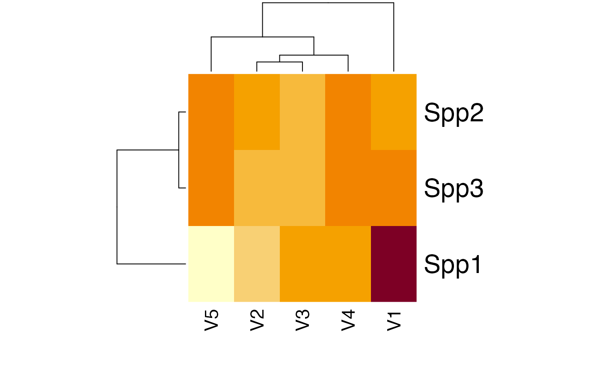

Weighted relative suitability index
sindex.RdCalculates weighted relative suitability index.
Arguments
- y
matrix of observations for
sindex, vector of observations forwrsi.- x
a matrix of proportions (i.e. the values 0 and 1 should have consistent meaning across the columns, often through a unit sum constraint).
Value
wrsi returns a data frame (class 'wrsi') with the following columns:
WRSIweighted relative suitability index, range (0- Inf).
zWRSIlog of
WRSI(z-transformed), range (-Inf, Inf).rWRSIinverse Fisher z-transformed
zWRSI, range (-1, 1).PusedandPavailtotal proportion of used (
y > 0) and available of each feature (column) inx.Pwweighted proportions from
y.uandaused and available totals for each feature (column) in
x.
sindex returns a data frame (class 'sindex') with
one column for each species, and one row for each feature (column) in x.
Cell values are inverse Fisher z-transformed (zWRSI) indices.
Examples
## --- habitat composition matrix
set.seed(1234)
n <- 1000 # sample size
k <- 5 # habitat classes
s <- runif(n, 1, 5)
p <- plogis(rnorm(n*k, 0, rep(s, k)))
p <- p*t(replicate(n, sample(c(10,4,2,1,1))))
x <- p / rowSums(p)
summary(x)
#> V1 V2 V3
#> Min. :0.0000013 Min. :0.0000009 Min. :0.0000017
#> 1st Qu.:0.0389388 1st Qu.:0.0470597 1st Qu.:0.0400545
#> Median :0.1058491 Median :0.1140524 Median :0.1130047
#> Mean :0.2071808 Mean :0.2031796 Mean :0.2041691
#> 3rd Qu.:0.2937164 3rd Qu.:0.2778203 3rd Qu.:0.2833783
#> Max. :0.9196112 Max. :0.9667043 Max. :0.9443230
#> V4 V5
#> Min. :0.0000003 Min. :0.0000017
#> 1st Qu.:0.0383821 1st Qu.:0.0351978
#> Median :0.0945018 Median :0.0974075
#> Mean :0.1863882 Mean :0.1990821
#> 3rd Qu.:0.2398223 3rd Qu.:0.2765121
#> Max. :0.9637045 Max. :0.9437804
summary(rowSums(x))
#> Min. 1st Qu. Median Mean 3rd Qu. Max.
#> 1 1 1 1 1 1
## --- observations
## expected abundance in each habitat class
lam <- c(0.8, 0.6, 0.5, 0.4, 0.1)*1
## sample x habitat level abundances
yy <- t(sapply(seq_len(n), function(i) {
## intercept and modifier combined
rpois(k, (x[i,]*lam))
}))
## total: sum over habitat classes
## this is what we observe
y <- rowSums(yy)
colSums(yy)
#> [1] 174 107 87 73 18
table(y)
#> y
#> 0 1 2 3 4
#> 633 290 63 13 1
## --- wrsi calculations
(w <- wrsi(y, x))
#> WRSI zWRSI rWRSI Pused Pavail Pw u
#> V1 1.2738196 0.242019928 0.237402746 0.2639110 0.2071808 0.4674918 96.85533
#> V2 0.9308739 -0.071631412 -0.071509147 0.1891346 0.2031796 0.3416307 69.41241
#> V3 0.9878036 -0.012271338 -0.012270722 0.2016790 0.2041691 0.3625239 74.01620
#> V4 0.9989138 -0.001086792 -0.001086791 0.1861858 0.1863882 0.3666014 68.33018
#> V5 0.7991152 -0.224250206 -0.220565269 0.1590896 0.1990821 0.2932753 58.38587
#> a
#> V1 207.1808
#> V2 203.1796
#> V3 204.1691
#> V4 186.3882
#> V5 199.0821
op <- par(mfrow=c(1,2))
## habitat level observations are unknown
plot(lam, colSums(yy) / sum(yy), type="b")
## this is approximated by the wrsi
plot(lam, w$rWRSI, type="b")
abline(h=0, lty=2)

par(op)
## --- sindex calculations for multiple species
y2 <- cbind(Spp1=y, Spp2=rev(y), Spp3=sample(y))
(w2 <- sindex(y2, x))
#> Spp1 Spp2 Spp3
#> V1 0.237402746 -0.008808089 0.02204551
#> V2 -0.071509147 -0.020322313 -0.03248812
#> V3 -0.012270722 -0.035190107 -0.04492797
#> V4 -0.001086791 0.036090377 0.02727927
#> V5 -0.220565269 0.030243498 0.02821293
heatmap(t(as.matrix(w2)), scale="none")
